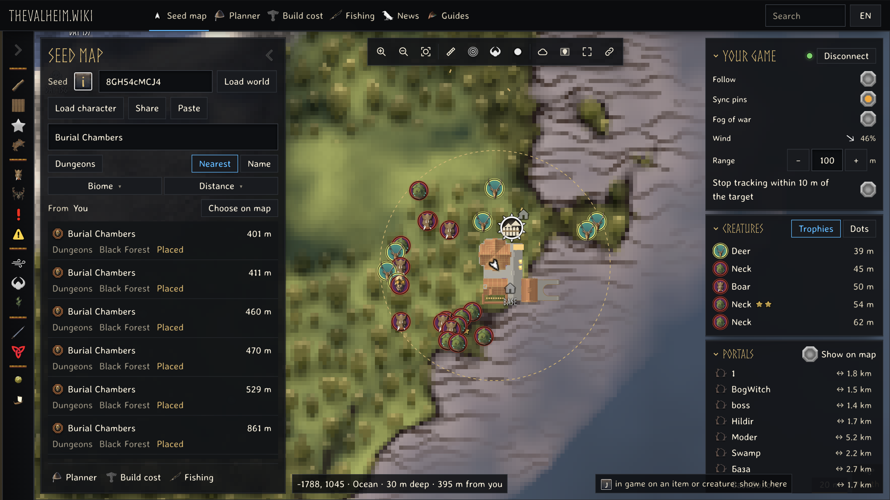
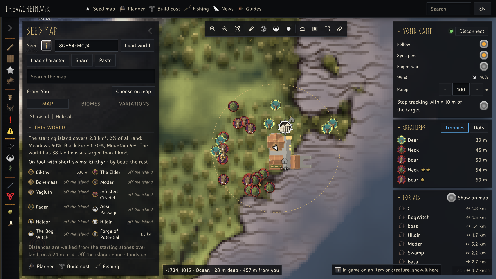
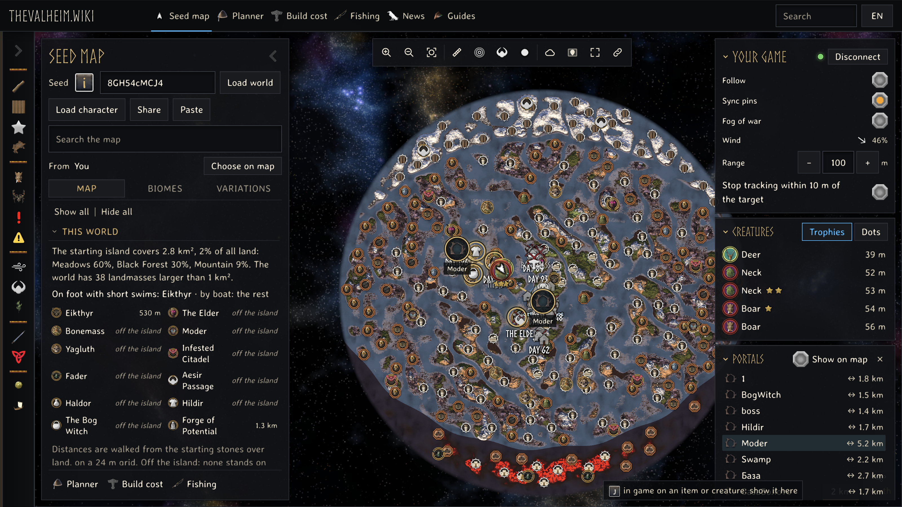
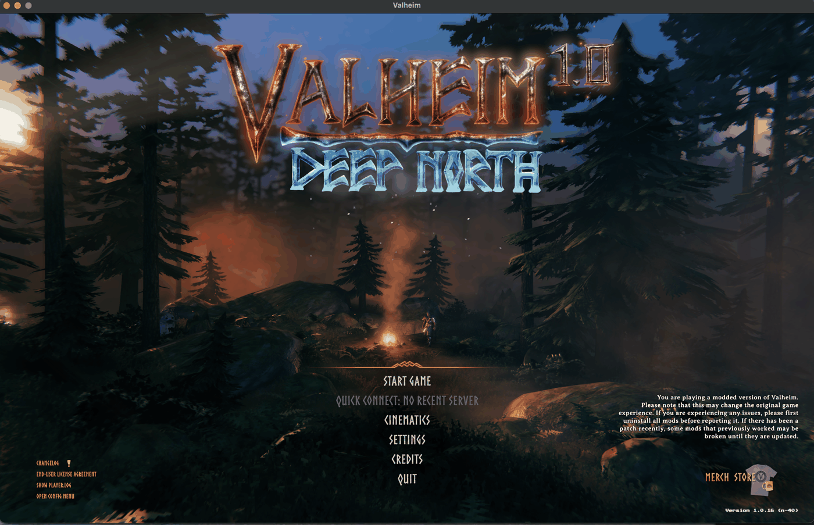

Find what is nearest to you
Search the map from your live position. Results are ordered by distance from where you stand.
Keep Valheim on one screen and your running world on the other. Follow your position, find the nearest place, and bring a map target back into the game.

Your best companion for exploring as you play.
Your world is already running. The map follows it: your position and heading, nearby creatures with their stars, and the players who share their position.

Search the map from your live position. Results are ordered by distance from where you stand.

See your portal tags and connections. Select a pair to reveal both ends on the map.
Track a location, resource, portal, or pin. A personal in-game ping keeps the target and its distance in sight.
The browser connects directly to the mod on this device. Live game traffic never passes through our servers. Nearby creatures are limited to the area your game has loaded.
Your best starting point for native Apple Silicon mods.
Run compatible BepInEx 5 mods in the native Apple Silicon version of Valheim, without switching the game to Rosetta.
The native loader build has run with mods. The exact download ZIP still needs its installation check, and Intel Macs have not been verified.

This package combines the Apple Silicon loading fix in BepInEx 5 with UnityDoorstop 4.6.0 and a Valheim launch script.
The guide includes the exact folder and launch option.
Mac installation guide